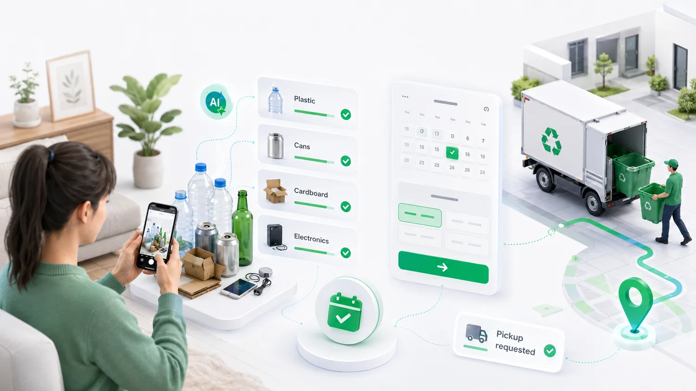
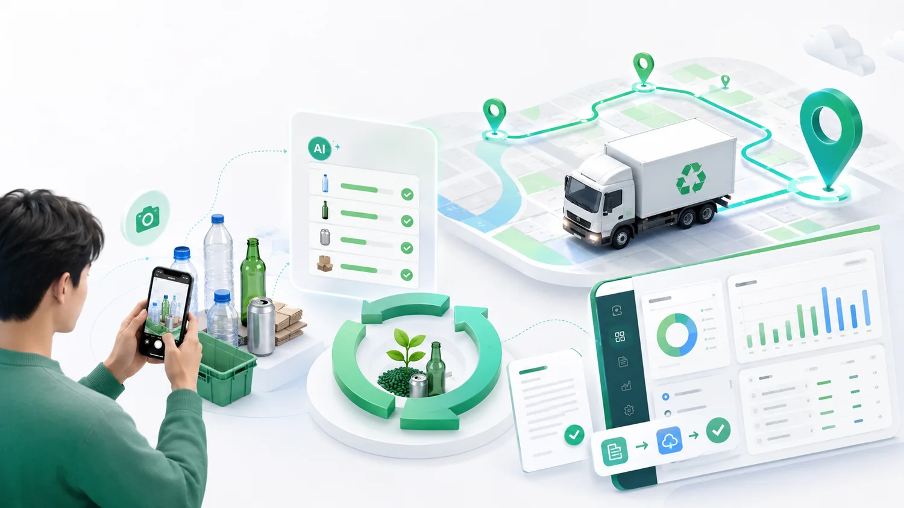
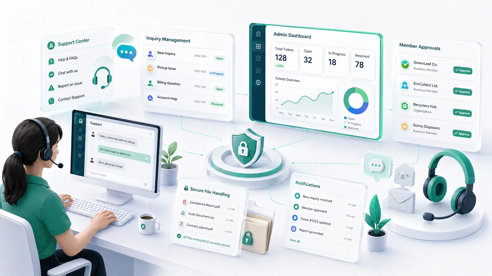

AI 기반 자원순환 운영 플랫폼
버려지는 자원,
버려지는 자원,
업무와 수거까지 한 번에 잇다.
개인은 사진으로 수거를 신청하고, 기관·기업은 최소 입력으로 서류 초안을 만들며, 업체는 로그인 후 입찰방·수거지도·최적노선으로 물량을 찾습니다.
공개 메뉴 단순화역할별 대시보드플랜별 보호자료API 키만 서버에 연결

아이콘과 이미지로 기능을 한눈에 보이게 구성했습니다.
공개 홈페이지는 복잡한 메뉴를 줄이고, 핵심 기능은 카드와 아이콘으로 설명합니다. 실제 업무 기능은 로그인 후 권한별로 열립니다.
공개 홈페이지에는 핵심만, 업무 기능은 로그인 후에만.
기관·업체·기업·입찰방·수거지도·최적노선은 공식 상단 메뉴에 노출하지 않고, 로그인 후 역할·플랜에 따라 표시되도록 정리했습니다.


운영 준비
관리자는 회원 승인, 문의답변, API 상태, 단가정책을 한 화면에서 봅니다.
관리자 대시보드에는 회원상태·플랜·신뢰점수·단가정책·보호자료 권한·문의답변·감사로그를 묶었습니다.